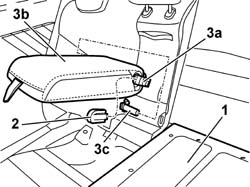

7050B18 REAR SEAT ARM REST - R+R
- Path
- Procedures > 70 FITTINGS > 7050 REAR SEATS > 7050B REAR SEAT HEAD RESTRAINT/ARM REST > 7050B18 REAR SEAT ARM REST - R+R
- Kind
- repair procedure (removal / refitting; the operation number is the code)
- Applies to
- all engines; all production periods
- Interactive page
- https://sloeber94.github.io/elrnDB-aGt/en/#/125001955
Applies to: all engines; all production periods
 Removing
Removing
 Refitting
Refitting1. Lower the left-hand squab.
2. Release the armrest trim towards the front of the vehicle.
3. Press the retaining tab (3a) and remove the armrest (3b) releasing it from the support pin (3c) acting in the direction shown by the arrow.

Applies to: all engines; all production periods
Refitting
RemovingCheck that the armrest is not damaged.
Position the armrest fitting it on the support pin and attaching the retaining tab.
Fit the trim and lift up the left backrest.
Topics that link to this page (7)
- 5505C41 CABIN WIRING - R R
- 7050A35 MOUNT (ONE) FITTING REAR SEAT TO FLOOR - R R
- 7050A36 MOUNT (ONE) FITTING REAR SEAT TO FLOOR - R R
- 7050A43 ONE SPLIT REAR SEAT SQUAB FASTENING RELEASE DEVICE R R
- 7050A70 LH OR RH DEVICE WITH CABLE (ONE) OF ONE REAR SEAT SQUAB CATCH R R
- 7065B18 CENTRE REAR SEAT BELT - R.R.
- 7065B26 CABLE FOR ATTACHING RELEASING REAR CENTRAL SEAT BELT REEL R R